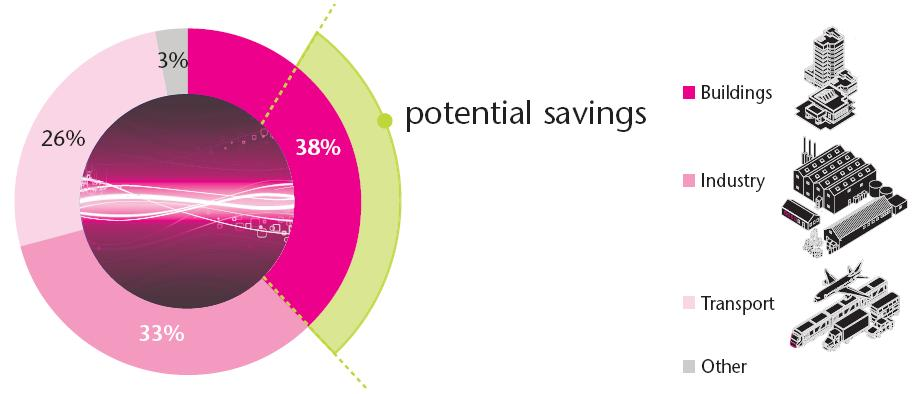
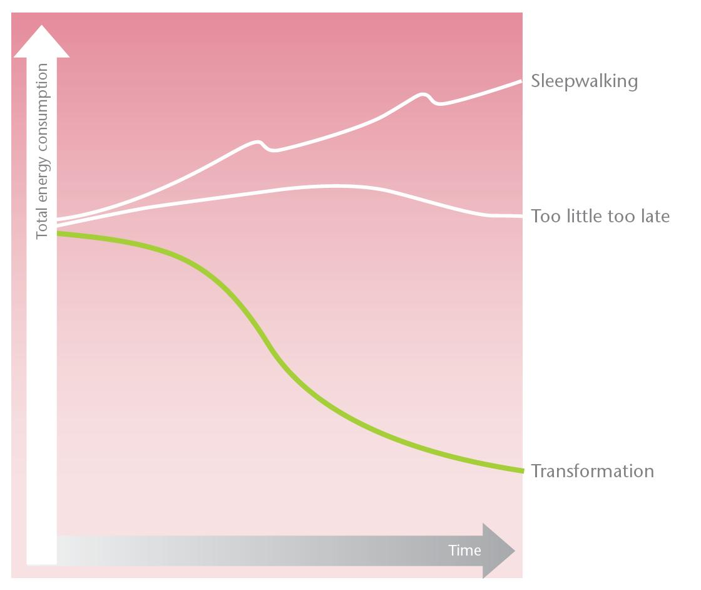
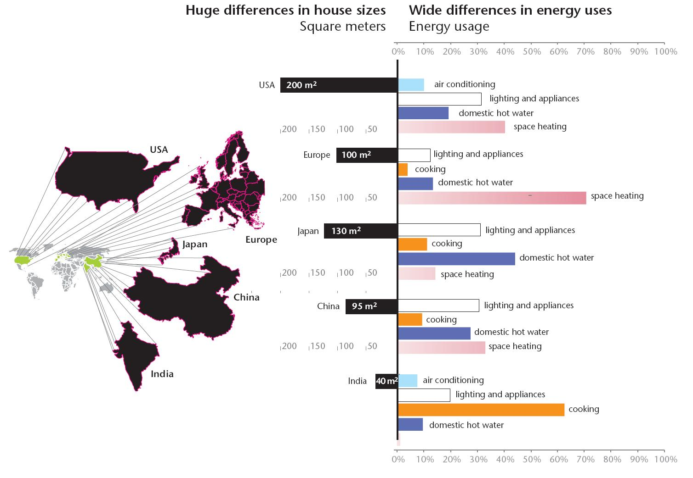

Buildings can account for about 40% of the potential savings in energy use (Figure 1). Much building energy is wasted because of poor design, inadequate technology and inappropriate behaviours. Both new and existing buildings can become energy-efficient using a combination of passive and active measures in design and operation. Incorporating the best design and technical solutions can cut energy use by about two-thirds.
The number of low-energy new homes already existing in many countries, although still confined, demonstrates that energy targets are technically achievable. User behaviour can also make a difference. For instance, wasteful behaviour can add one-third to a building’s designed energy performance, while conservation behaviour can save a third (Figure 2).

There are various scenarios under which future trends in energy consumption in the building sector can be estimated (Figure 3). The ‘Sleepwalking’ scenario envisages a continuation of current trends in energy use, with no sustained attempt to address energy efficiency. According to this path, total energy consumption is much higher by 2050. In the ‘Too little too late’ scenario, there is a continuation of the current pattern of much talk and little action. Namely, awareness keeps growing but action is piecemeal rather than coordinated. In this case, the development of low-energy buildings is still too slow, with energy consumption returning to current levels by 2020. ‘Transformation’ is the only scenario that includes necessary energy savings across the building stock. In this scenario, new energy policies are implemented, new design approaches and technologies are applied, and new skills are learned. This is all part of a coordinated global action. Widespread awareness of energy priorities changes behaviour and causes the rapid uptake of increasingly energy-efficient technologies and practices.
Total energy use in buildings is influenced by three determinants: population size, square meters of building per person, and energy per square meter. These determinants are shown in the formula: total energy use = population X space per capita x kWh per m2. The components of the equation are affected directly by several forces. The main drivers are demographics, social and cultural trends, the design of buildings and equipment as well as climate. For example, ageing populations and changing lifestyles lead to more single-person households. Social trends influence household size, and therefore floor space and energy consumption per person. Cultural factors influence the acceptability of various comfort levels. Building design and choice of equipment determine the level of energy required. Climate influences demand for energy services, especially heating and cooling. Depending upon the afore-mentioned drivers, energy uses differ widely all over the globe (see Figure 4).
Space heating is dominant in Europe, while water heating is very significant in Japan. In rural India, as in many developing countries, where many people do not have access to electricity, the main energy use is cooking, mainly by using biomass. Rising wealth in developing countries will certainly lead to higher energy use.